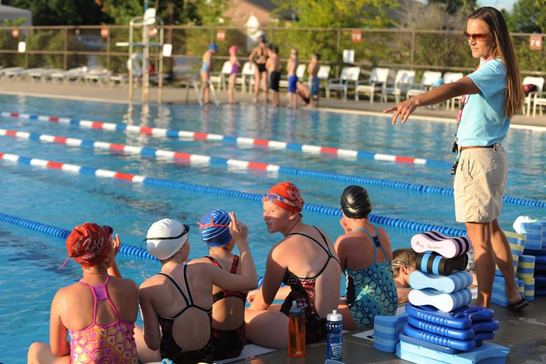
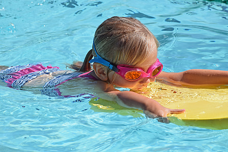
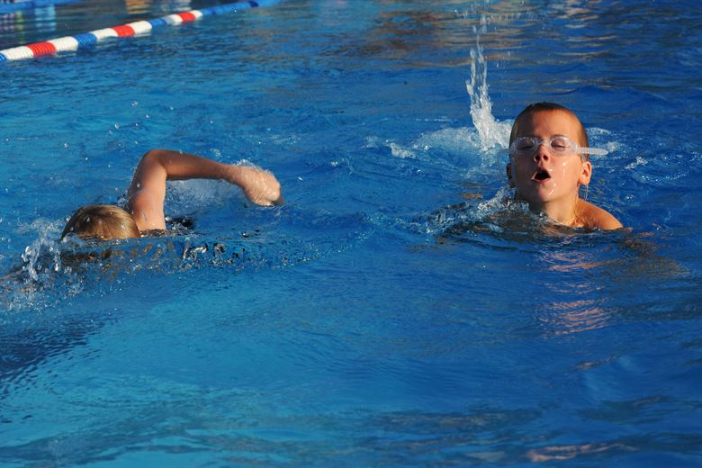
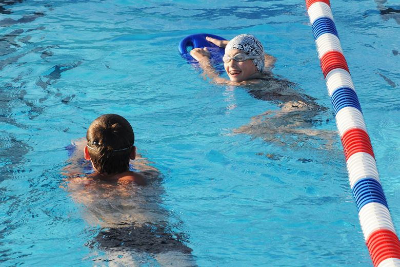
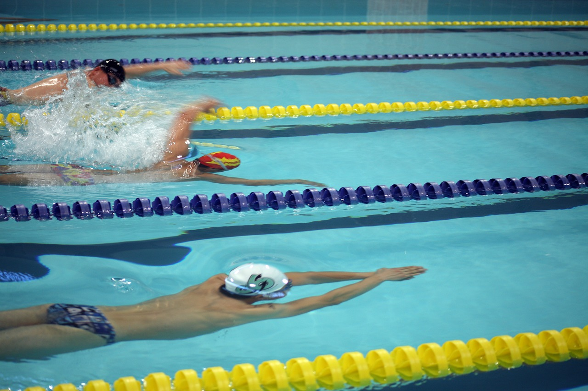

La scuola nuoto è un progetto promosso dalla FIN (Federazione Italiana nuoto) per uniformare gli standard organizzativi e didattici per garantire un servizio eccellente ed omogeneo sul territorio nazionale. L’organizzazione generale della scuola nuoto consiste in gruppi di individui(dai 0 anni fino agli adulti) che svolgono lezioni di 50-60 minuti preferibilmente bisettimanale o trisettimanale, così da permettere una ripetizione costante degli esercizi appresi al corso. I gruppi devono essere omogenei e di un numero concordato con la società che va in concomitanza con il numero di istruttori.
L'istruttore
L’istruttore è una figura fondamentale perchè non è solo un insegnante ma anche un educatore, infatti durante la lezione di nuoto non si apprendono solo i diversi esercizi ma anche il rapporto con gli altri e la gestione delle situazioni circostanti. L’istruttore ha a che fare con moltissime fasce di età tutte diverse, ecco perchè deve adattare il proprio stile comunicativo ad ogni età che gli si presenta, in modo tale da ricevere feedback positivi.
Inoltre deve riuscire ad organizzare una progressione didattica ben strutturata seguendo le linee guida promosse dalla Fin, per garantire un apprendimento efficace.
Generalmente i corsi di una scuola nuoto sono suddivisi in 5 livelli:
Primo livello: ambientamento

Qui impareranno ad avere un primo confronto e approccio con l’impianto, l’istruttore e l’acqua. Ogni bambino è diverso e hai i suoi tempi, quindi è assolutamente normale che inizialmente si possano riscontrare difficoltà nell’entrare in acqua.
L’istruttore sarà in acqua (bassa o alta) con i bambini per tutta la durata del corso e le prime lezioni saranno dedicate al conoscere l’acqua cercando appunto di ambientarsi con l’utilizzo di supporti di galleggiamento.
Una volta presa confidenza, l’istruttore insegnerà ad immergere il viso (è sconsigliato infatti l’uso degli occhialini perchè potrebbero rendere più difficoltoso il processo), si apprende il meccanismo della respirazione e successivamente si avvia la fase di galleggiamento prono/supino per eliminare progressivamente il supporto, infine abbiamo lo scivolamento e le prime forme di propulsione con le gambe.
Ovviamente tutti questi esercizi sono trasformati in giochi didattici che permettono
un apprendimento più veloce e allo stesso tempo conoscere l’ambiente acqua.
Secondo livello
- In questo corso il bambino è più autonomo, l’istruttore insegna dal bordo vasca (acqua alta) e l’età va dai 6 agli 8 anni (circa) dipende sempre dal bambino e dalle sue capacità.
Il bambino (solo se ha appreso respirazione, galleggiamento e prime forme di propulsione) potrà cominciare un percorso più impegnativo, dove verranno rinforzate le conoscenze già apprese e aggiungere quelle nuove come: - l’apprendimento è graduale e segue una struttura piuttosto precisa in cui avviene una successione di esercizi propedeutici alle diverse capacità da sviluppare.
La lezione comprende una fase di rinforzo delle conoscenze, una fase di apprendimento, e una fase di “gioco” che corrispondono agli ultimi 10 minuti di lezione in cui il gioco non è mai fine a se stesso ma deve
essere propedeutico all’apprendimento di certe abilità, in cui sono compresi anche i tuffi. - Per partecipare a questo corso i bambini devono aver acquisito tutte le competenze scritte sopra, devono quindi saper respirare correttamente, battere le gambe, abbozzare qualche bracciata, immersioni, scivolamenti, tuffi. L’età si aggira dagli 8 agli 11 anni circa. Anche qui avremo sempre una fase di rinforzo delle conoscenze precedenti, di apprendimento e gioco. L’istruttore darà esercizi strutturati con un linguaggio un pò più complesso e gli obiettivi tecnici sono:
- Quarto livello
- Questo livello inizia ad essere abbastanza complesso, l’età va dai 12 ai 14 anni circa e il bambino/ragazzo avrà appreso lo stile e il dorso completo (gambe-braccia-respirazione)
Le lezioni saranno più tecniche con l’inserimento di piccole ripetizioni su 25 mt. Gli obiettivi tecnici saranno quindi da raggiungere attraverso una serie di esercizi specifici a seconda dello stile per permette l’apprendimento di: - Quinto livello
- Nel quinto livello l’età va dai 15 ai 17 anni ed è un livello di perfezionamento di tutte le abilità appresi precedentemente. L’obiettivo dell’istruttore sarà quindi di mirare ad esercizi che possano migliorare al massimo la tecnica fine della nuotata, ma non solo, anche delle virate, tuffi e subacquee. Si cominciano a svolgere piccole serie di allenamenti in cui ci sono ripetizioni di resistenza e velocità spiegando i diversi metri di vasca e meccanismi di allenamento, la fase di gioco è riempita dal perfezionamento di virate/tuffi e qualche staffetta o garetta cronometrata tra i ragazzi. Gli obiettivi tecnici da raggiungere sono:
Terzo livello


Spero di avervi fornito un quadro generale di come funziona la scuola nuoto, devo avvisarvi che però non tutte le società seguono esattamente questo schema di livelli, quindi non allarmatevi se non sono presenti tutti e 5!
MOLTO IMPORTANTE: l’età non è fondamentale per l’inserimento nei vari livelli, ma sono le capacità del bambino che fanno la destinazione a tale livello.
Sarà poi l’istruttore che deciderà la destinazione in base alle capacità del bambino, questo per avere un gruppo il più omogeneo possibile per ottimizzare il lavoro.
Ovviamente queste sono linee guida su cui basarsi per riconoscere un buon corso di nuoto!